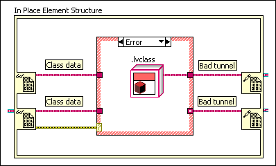
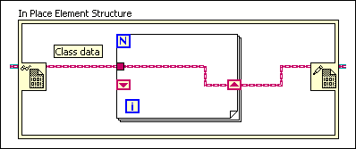

The tunnel or shift register lies along the wire between a Data Value Reference Read / Write Element border nodes. When the reference contains a class, all of the wires that lead to the Data Value Reference Write Element node must originate at the Data Value Reference Read Element node.
This error occurs when an input terminal originates at a different source or the wire passes through a function that does not guarantee run-time type preservation. This error also can occur if you select Use Default If Unwired from the shortcut menu on a tunnel that connects the Data Value Reference Read / Write Element border nodes.
To correct this error, you can use uninitialized shift registers.
